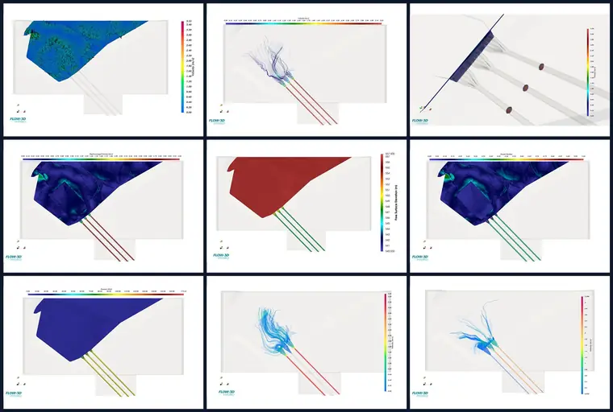

Role
End-To-End CFD Analysis
Prepared CFD-ready geometry, defined operating cases, reviewed simulation behavior, post-processed hydraulic outputs, and prepared technical reporting for upper and lower reservoir assessments.
Consultancy Project | 2025 - 2026
CFD-based hydraulic assessment of reservoir intake operation, including velocity fields, free-surface behavior, pressure distribution, Froude response, streamline patterns, and anti-vortex beam performance.
Guided by Prof. Pranab Kumar Mohapatra.

Role
Prepared CFD-ready geometry, defined operating cases, reviewed simulation behavior, post-processed hydraulic outputs, and prepared technical reporting for upper and lower reservoir assessments.
Method
Compared generation and pumping cases using velocity contours, streamlines, cross sections, free-surface elevation, pressure fields, and Froude number outputs.
Outcome
Organized complex hydraulic behavior into public-safe visuals and decision-ready summaries for intake performance and vortex-control review.
Technical Highlights
Evaluated how flow enters and distributes near reservoir intake zones under selected operating combinations.
Compared flow behavior with design interventions intended to reduce adverse vortex formation near intakes.
Produced visuals for velocity, pressure, free surface, Froude number, and streamline-based assessment.
Compiled operating-case findings into structured reports for engineering review while keeping sensitive project details private.
Next